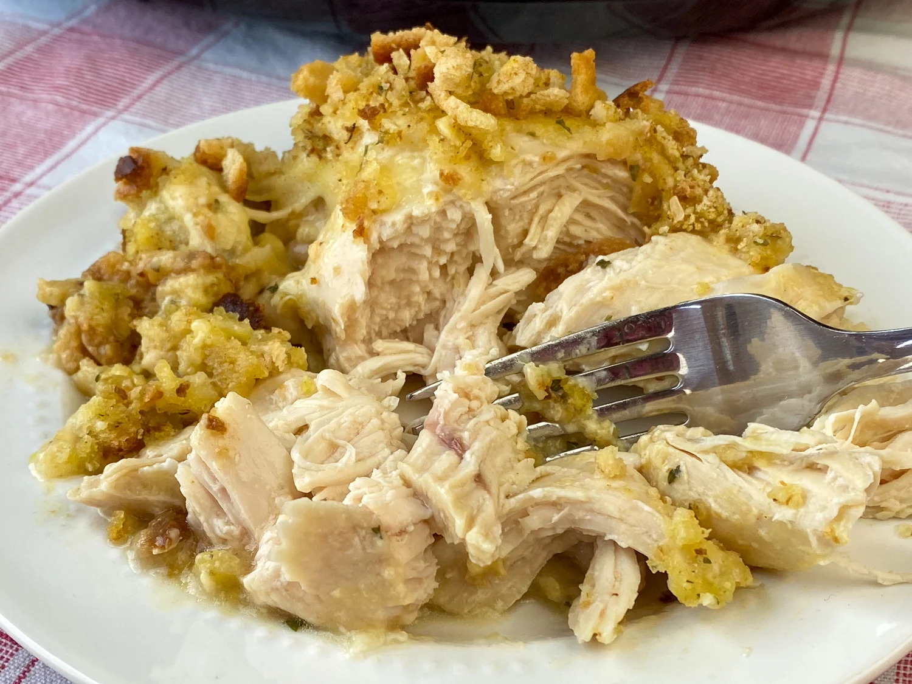

Home
Swiss Chicken

Description
A family favorite passed down from my Aunt Janice. We use to have this dish every Christmas Eve and have taken to calling it Aunt Janice's Chicken.
Whole chicken breasts covered with Swiss cheese and stuffing, makes a wonderful meal that is easy to put together.
Ingredients
- 3 packages of chicken breasts
- 1 package of swiss cheese slices
- 2 cans of cream of chicken soup
- 1/2 package of Pepperidge Farm stuffing mix
- 2 sticks of melted butter
Steps
- Preheat oven to 250 degrees.
- Place chicken breasts in 9X13 inch backing dish.
- Place slices of swiss cheese over chicken.
- Spread cream of chicken soup over swiss cheese.
- Sprinkle 1/2 package of stuffing mix over soup.
- Drizzle melted butter over stuffing mix.
- Cover dish with aluminum foil.
- Bake for 3 hours.